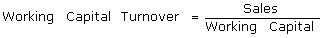

A measurement comparing the depletion of working capital to the generation of sales over a given period. This provides some useful information as to how effectively a company is using its working capital to generate sales.
A company uses working capital (current assets - current liabilities) to fund operations and purchase inventory. These operations and inventory are then converted into sales revenue for the company. The working capital turnover ratio is used to analyze the relationship between the money used to fund operations and the sales generated from these operations. In a general sense, the higher the working capital turnover, the better because it means that the company is generating a lot of sales compared to the money it uses to fund the sales.
For example, if a company has current assets of $10 million and current liabilities of $9 million, its working capital is $1 million. When compared to sales of $15 million, the working capital turnover ratio for the period is 15 ($15M/$1M). When used in fundamental analysis, this ratio can be compared to that of similar companies or to the company's own historical working capital turnovers.
{kind=link}